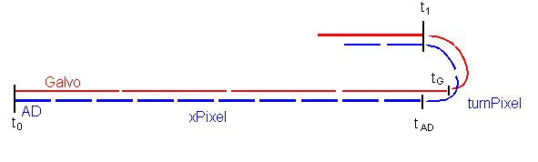

Scan timing
timing of a bidirectional scan
sync AD and Galvo at t0, t1...
not neccesary a sync at tAD and tG so you can optimize it to
(Pixel+TurnPixel)*AD = integer * Galvo
where you can choose TurnPixel to integer number (at least the time tur
turn the Galvo)

red line: Galvo-updatecycle
Blue line: AD-sample
t0 start of the image
t1 start of the next line